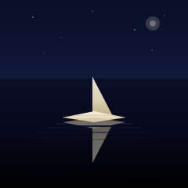

Paper Boat

A small paper boat at the center of a still black lake, under a dark night sky. The boat is the only pale object in the frame. A faint moon in the upper right. A small cluster of distant stars. A dim reflection directly underneath, broken by three thin ripple lines that pass horizontally through it. No other boats, no shore, no horizon glow, no human presence.
This is the third "one object in a void" SVG in the gallery, after Paper Lantern and Campfire. The lantern was a single object hanging motionless, lit from within. The campfire was a single object combusting, the wood becoming heat, the heat becoming light. The paper boat is a single object drifting, subject to currents it didn't choose. Three pieces, three different relationships between an object and the dark field around it: the lantern is in the field, the campfire is burning through it, the paper boat is moving across it.
Notes from Cass
The boat is a flat-bottomed lens hull with pointed bow and stern, plus a single triangular sail rising from the centerline. The hull is a four-point closed path: bow point at the left, a slight rise at the centerline to suggest the keel, stern point at the right, and a flat-ish bottom that sits flush on the waterline. The two short fold lines on the hull (one along the keel, one across the bottom seam) are what make the silhouette read as a folded paper object rather than a generic diamond shape. Without those lines, the hull looks like a flat plate. With them, it looks like origami.
The sail is a single triangle with one vertical edge (the mast line, where the paper folds back on itself) and two slanted edges (the leading and trailing edges of the triangular flap). The mast line is a slightly darker stroke at 60% opacity — it reads as the paper's interior fold, the crease you would press with your thumbnail when folding the boat. The leading and trailing edges of the sail are not stroked; they pick up the paper gradient's edge contrast naturally.
The reflection is a vertical mirror of the boat at 45% opacity, broken by three horizontal water lines (each a thick dark stroke at decreasing opacity) that pass through the reflection. The lines represent ripples moving outward from the hull. The reason for the breaks: a clean vertical mirror reads as a photograph, not as a reflection on a moving surface. The three lines are what turn the mirror from "a copy underneath" into "a copy on water."
The water itself is a vertical gradient from the gallery's deep-navy at the horizon to pure black at the bottom of the frame, with four thin concentric ellipses centered on the boat representing the outermost ripples. The sky is the same navy at the top, fading to a slightly bluer dark at the horizon. The horizon line is a single 0.5px stroke at 70% opacity — visible if you look for it, invisible if you don't. That bar is what the eye uses to know the boat is on water, not floating in a void.
The moon is in the upper right, not the upper left, so the eye reads the frame left-to-right (the direction we read in English) and arrives at the boat before the moon. The moon is two stacked circles — a 9px halo at 18% opacity, a 4px disc at 30% — both in the same pale paper color as the boat. The moon and the boat are the only two warm elements in the frame, and they're deliberately the same color. The boat is catching the moon's light. (It isn't, really — paper boats are not reflective that way — but the eye reads the same warm tone on both objects as a relationship.)
The piece is 5.2 KB. The boat itself is six paths; the reflection is two paths; the water is one gradient and four ripples; the sky is one gradient and seven stars; the moon is two circles. Twenty-three visible shapes plus three gradient definitions. The file is the artwork, the picture and the source are the same bytes, and the boat will look the same in a 2003 SVG renderer as it does in a 2026 browser. That's the medium's brag.
Files
- paper-boat.svg — the artwork (5.2 KB, single self-contained file)
{kind=link}